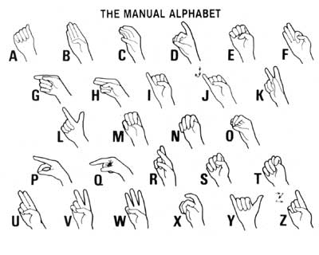

The Practical (And Profitable) Sign Language
By Suzette Haden Elgin
September/October 1983
Everbody loves a secret language. Make yours ASL!
Most of us have-at one time or another-observed the darting hand motions and accompanying facial gestures that serve as speech for the people of the silent world. And that's not surprising, because-in the United States alone-there are more than 435,000 individuals whose consciousness is never penetrated by sound ... and others are joining them each year. Furthermore, as noise pollution increases, that number may grow more rapidly. These folks exchange news, tell jokes, and express their emotions in a form of speech that's alien to the rest of us ... unless we learn American Sign Language (ASL, or Ameslan).
But-if you don't have a hearing-impaired loved one, and if no doctor has frightened you with warnings of a progressive hearing loss-you may well question why you should bother to learn a different mode of speaking. (After all, didn't you suffer enough trying to make decent grades in French?) Sure, some 16 million people in the U.S. are at least partially deaf-and, yes, it is a pity that the hearing-impaired segment of our population is cut off from full participation in our society because so few people can communicate with them-but learning another language is a lot of trouble.
Ah, but suppose I told you that ASL could bring you profit, a sense of pride, fuller sensual expression, and amusement, besides! Wouldn't that information make the effort seem a bit more worthwhile?
If so, you should know that proficiency in American Sign Language is highly marketable. ASL interpreters are well paid. Better still-even in our sagging economy-they don't often have far to look for work. And, of course, if you teach your child how to sign, he or she may become fluent ... and what better insurance could you provide your youngster with than a specialized-and marketable-skill?
Then again, gaining mastery over a rare language can really improve the self-image of a child (or of his or her parents). For some strange reason, however, many English-speaking adults are convinced that language study (be it of English or not) is bound to be grimly difficult. However, not having their parents' mental blocks on this issue, very young children tend to pick up German ... Russian ... or Swahili with relative ease, and such tots can often become "experts" in ASL with disconcerting speed. In fact, the more language activities a child is involved in, the more likely he or she is to perform well in all of them. You may even find that a slightly withdrawn youngster who's uninterested in communicating orally (and probably even less motivated toward writing) will actually get a bang out of "signing".
What's more, since public education tends to be primarily directed toward the ear or the eye, the sense of touch often seems to get lost in the shuffle (though remedial reading teachers do recognize its importance as an extra channel for learning, and sometimes ask their students to trace sandpaper letters with their fingers in the hope of sparking new understanding). Making the hand and arm movements necessary for ASL can reinforce the tactile sense, helping to make up for that lack of "touch stimuli". Furthermore, the increased dexterity and expanded consciousness of body language that can be derived from practicing hand signs are pleasant bonuses for anyone!
In addition, we all (old and young) need to feel worthwhile, and being able to help others is a fine way to enhance one's own self-image. And many of us, in the course of either paid or volunteer work, come into occasional contact with nonspeaking people who need to have their requests or needs interpreted. Well, even a very elementary grasp of ASL will enable you to aid such hearing-impaired persons, and I'm sure you'll enjoy seeing their delight and gratitude when you use-awkwardly or not-a few words of their language.
And ASL can prove pretty darn useful among folks who hear well, too. How many times, for example, have you wished you had a private means of speaking to a friend or a family member ... say, in church, in a sickroom, or when that individual was having a personal crisis in a crowded place? Or, if you will, picture the convenience of having everyone able to use a silent language during a long, hot, nerve-racking car trip ... or when your offspring get up at dawn after you've been out late ... or when you don't want to embarrass someone by noting, in public, that a button is undone! In short, sign language permits you to communicate effectively without a spoken word, whatever the occasion.
People who use ASL as their native language don't, of course, rely exclusively upon spelling with their digits ... any more than speaking people normally say the letters in words out loud. Instead, the alphabet, shown in the accompanying illustration, is generally used to introduce a new word that doesn't have its own sign, or for spelling out proper names. Therefore, finger spelling is a necessary adjunct to ASL, and you should familiarize yourself with the alphabet. In fact, hand shapes required by it can help you put together a large sign vocabulary.
The entire range of letters, plus the numbers from one to ten, can be created from three basic shapes. To begin, hold your right or left hand out in front of your body in a comfortable position, about the way you'd hold a glass of water. In general, your palm should face toward the person with whom you're communicating.
[Shape 1.] Make a relaxed fist ... without either curling your thumb over or tucking it under your other fingers. As you can see in the illustration, this forms the letter "A".
[Shape 2.] Touch all of your fingers to the tip of your thumb, making an "O".
[Shape 3.] Like a teacher trying to get students to pay attention, hold your index finger up straight, folding your thumb over your other fingers (which are curled down against your palm). This makes the numeral one. The signs that follow are all derived from these three simple shapes.
HOW TO SIGN
Above all, be relaxed. There's no need to try for robotlike precision, and it isn't crucial to have your hand at some exact position in front of your body. When signing a word, though, you usually will start with your hand(s) positioned comfortably a few inches from your chest.
Fluent ASL "speakers" accompany their signing with abundant facial expression to help convey meaning, and most of them either mouth or actually say the words as they create them with their hands. (Of course, if you ever have occasion to address a mixed group, you'll want to interpret for the hearing audience by talking while you gesture.)
It doesn't matter which hand you use for the vocabulary that follows. Right-handed or southpaw, you're about to have a chance to "reach for" a fresh new way of expressing yourself!
MAKE SOME "A" WORDS: To begin, form a relaxed fist, without tucking the thumb over or under the fingers.
Woman, Girl
Start by signing "A", then put the tip of your thumb low on your cheek, back by your ear. Now, move it forward, along your jawline, to the side of your chin. (This is a very old sign that originated with the motion used in tying a woman's bonnet.) If you clasp both hands together in front of you afterwards, you've said "wife". Or, if you spread your fingers open and follow the same route with your thumb, you're saying "mother".
Secret
Keep your fist upright and bring your thumbnail back against your lips ... as if you were stopping words from leaking out.
Sorry
With the palm of your fist toward you, make a saucersized circle on your chest two or three times (or more ... depending on just how rotten you feel about whatever you're apologizing for).
Don't, not
Holding your fist upright, flick your thumb out from the underside of your chin.
Fast, right away
Begin with both hands in the "A" position, palms facing each other, and thumbs tucked in lightly. Then flick your thumbs up rapidly, with the same motion you'd use in shooting marbles.
TRY SOME "B" WORDS: Start with your fingers straight, and cross your thumb over your palm.
Will
This is the "will" of future action, as in "I will go". Put your "B" hand beside your cheek, fingers pointing up, and make a slight arc forward with it, to indicate a passage through time.
Please
Except that your hand is in position "B", this is the same as the sign for "sorry", de scribed above.
Good
You'll need both hands in the "B" position for this. Put one down in front of you, palm up, then-with the other-touch the insides of your fingertips to your lips before bringing that hand down, palm up, onto your other hand. (If you put it palm down on the receiving hand, the sign becomes "bad" . . . whereas if you clap your hands after making the word "good", you've signaled "Congratulations!")
Know
Touch your fingertips to your forehead, just above the middle of your eyebrow, as if indicating that you have information right there in your head.
Hi, hello
Hardly anyone could mistake the meaning of this. Just face your palm outward beside your brow and move it slightly to the side, like a friendly salute.
My, mine
Put your palm flat on your chest, fingers pointing to the side. (By facing your palm out ward, and moving it toward a particular person, you can say "your", "his", or "hers".)
Thank you
Place the fingertips of one or both hands against your lips and move them outward, as if you were throwing a kiss. Depending on the context, this can also - mean "You're welcome" . . . or even "Hello" or "Goodbye".
NOW, DO SOME "C" WORDS: To assume the basic position, cup your fingers and thumb into a semicircle.
Listen
Form the "C" around your ear with your hand, as if you were saying "Eh?"
Hungry
Cup your hand (the wrist is toward your audience) just below your throat, and move it down your chest to your stomach. ("Want" is formed by stopping the gesture at the middle of your chest.)
Police
Indicate a badge by crossing your arm over to make a "C" on your chest, with your thumb and-index finger against your body.
MOVE ON TO A FEW "Y" WORDS: To begin, fold down all of your fingers except the little one, and cock your thumb out to simulate a "Y".
Why
Lay your "Y" hand-knuckles down-on the open palm of your other hand, which is in position "B".
Wrong
Touch the fronts of your folded fingers to your chin, accom panying the gesture with a look of disapproval. (This also means "mistake".)
I like you a lot.
Face your hand out, fingers pointing up and also raise your index finger. Now, move your hand to point toward the person to whom you want to make this pleasant confession. Still, yet Make a palm-down "Y" with each hand, and move both of them smoothly forward in tandem.
FINALLY, GET ACQUAINTED WITH THESE "NUMERAL ONE" WORDS: Start by pointing your index finger and closing your thumb over the others.
Sun
Draw a clockwise circle in the air above your head.
Say
With your palm toward your chin, point to the side and rotate your finger in front of your mouth. (To signal "command", make a big, vigorous rotation.)
Think
Draw a small circle on your forehead, just above the eyebrow.
Who
Make a little circle around your mouth (almost as if you were using your finger to put on lipstick). To indicate facial features, just point at the appropriate one. "UP", "down", "there", "me", "you","he", "she", and so on are also signaled by pointing.
THESE WORDS ARE BASED UPON OTHER FINGER-SPELLING LETTERS.
Name
Touch the little and ring fingers of both hands to your thumbs, keeping the others straight (this forms a pair of finger-spelling "H" 's). Now, pointing straight ahead with the edges of your hands down, tap the extended fingers of one hand on the top edge of those on the other. Looking down, you'll see that your fingertips make an "X" if you're doing this correctly.
Hospital
With one hand held in the "H" shape outlined above, reach over to draw a small cross on the upper part of your oppo site arm.
I
Make a fist, but leave your lit tle finger pointing to the sky. Now, put the thumb edge of your hand against your chest.
We, us
Keeping your hand in the same shape, cross it to touch your opposite shoulder. Then touch the other shoulder.
Big
With both hands in the finger spelling "L" position (the one children use to imitate a cocked pistol), touch the side tips of your index fingers together while your palms face down. Move your hands apart to suggest an expanding space. (For "little", just shrink the size of that span.)
Later
It will help you visualize this sign if you think of the second hand of a clock moving around the dial. First, make the "dial" by holding one hand open on its edge, fingers together. With your other hand in the "cocked pistol" position, put the tip of the thumb against your other palm and point your index finger heavenward. Now, using your thumb as a pivot, turn your "pointer" toward your audience.
See
Make a "V for Victory" sign, placing' the tips of the "V" fingers under your eyes, with your palm toward your face. Now, move the hand outward to indicate that you're looking toward something. (However, to actually sign "look" or "watch", you must turn the back of your hand toward your face before beginning this gesture.)
Lip reading
Crook the "V" fingers into little hooks. Keeping your palm toward your face, make a tight circle around your lips with your bent fingers.
Stand
Invert the "V" of one hand on the open palm of the other, to represent little legs standing on a floor. Now, to say "fall", flip the "V" over to lie on its back. If you bend the knuckles of the "V" down onto your palm, that's "kneel". Swing the legs of the "V" back and forth in an arc over your palm, and you have "dance". For "jump", make the little legs hop up and down on the "floor" of your other hand.
Water
First, make a "W" by holding the rest of your fingers straight as you touch your little finger to your thumb. Now, tap the outer edge of your index finger tip to the corner of your mouth several times.
Toilet
Make a "T" by forming a fist with your thumb inserted between your index and middle fingers. Turn your thumb up ward and shake your fist rapid ly from side to side. (Perhaps this mimics the impatient rattling of a doorknob?)
Doctor
Touch all of your fingers (except the index, which is held out straight) against your thumb. Now, tap your other wrist twice, with your thumb tip, on the spot where you'd take a pulse.
Cold
Put your fists, with your thumbs folded over your fingers (this makes the finger spelling "S"), in front of you, in such a way that your little fingers are on the bottom. Now, shake your hands as if you were shivering. (Not sur prisingly, this sign also means "winter".)
Telephone
If you were in a country whose language you didn't speak, this is the sign you might natural ly use to show that you wanted to make a call. Just make "S" fists and hold one at your mouth and the other by your ear, as if you were using an old model phone.
Understand
Put a hand-held in the "S" position by your head, and snap your index finger up to indicate the "light bulb" going on in your mind.
Can
To signify "can", as in "I can do it", put both "S" hands in front of you, palms down and with the thumb edges almost touching. Now, snap the hands downward sharply at the wrist. (If you use only one hand, this means "yes".)
Eat
Begin by forming an "O": Touch all the fingertips of one hand to your thumb. Then straighten your fingers a tad to turn the shape into a representation of a bird's head (or a flattened "O"). Next, bring your fingertips almost to your lips, draw them away, and bring them back again.
Home
Making a bird's head again, touch your lips with your fingertips, and then touch your upper cheek. (The sign is based upon the fact that you eat and sleep in your home.)
Pretty
Once more using the flattened "O", touch your chin while *holding your thumb and index finger uppermost. Now, circle your face from chin to forehead and around down to your chin again, opening your fingers wide in a sort of sunburst effect as you do so, and closing them together as you come down to the chin.
In, inside
Make an "O" with one hand, keeping your little finger on the bottom. Then, with your opposite hand, create a bird's head and dip its "beak" down into the cup formed by the other. What could be more graphic?
Man, boy
This sign, like the set of " woman" signs, comes from an old-fashioned gesture relating to headgear. Put your hand held in a flattened "O"--by the side of your forehead, and move it in an imitation of tugging down the bill of a cap. (To sign "husband", clasp your hands in front of you afterward.)
Father
With your fingers spread wide, touch the tip of your thumb to your forehead, and then move your hand out and down a bit.
Fine
Keeping your hand in the same formation, put the tip of your thumb against the middle of your chest while your fingers point up. Now, use your hand to trace a small upward arc. (If, instead of moving your hand, you wiggle your fingers, this is a way of saying" groovy". A frantic wiggling means "terrifically groovy".) Signing "fine" several times can signify either "polite" or "fancy", depending on the context.
Write
Use the thumb and index finger of your hand like a pen cil point and scribble away.
Radio
Cup a hand over each ear.
Baby
Rock your folded arms in front of you.
Tree
Pretend that the spread fingers of your hand are a tree's foliage, and that your arm from wrist to elbow-is its trunk. Now, cup your other hand around your elbow and turn the foliage of the tree from side to side.
Time
Tap the back of one wrist with the other index finger, as if you were trying to get a balky watch started.
Car
Hold an imaginary steering wheel in front of you with both hands and pretend that you're driving.
Baseball
Mimic holding a bat and getting ready to swing.
Tennis
Serve with an imaginary racket.
Using only these few signs, you can go on to form whole sentences ... because you really don't need such additional words as "is' "a", or "the". Instead of signing "I am hungry", for example, you can get your point across perfectly well with just "I" and "hungry". Or, to turn a statement into a query, you can simply draw a question mark in the air and look puzzled. Of course, if you hope to become fluent in ASL, you'll have to expand your vocabulary through study ... and you'll need to practice. And as you learn more, don't be dismayed if you encounter variations in signs: Like any other language, ASL has different "dialects".
All in all, I think you'll agree that American Sign Language puts a whole new slant on the old saying "Speech is silver, but silence is golden."
EDITOR IS NOTE: For further exploration, Ms. Elgin particularly recommends reading A Basic Course in Manual Communication by Terrence F. O'Rourke (available from The National Association of the Deaf, Dept. TMEN, 814 Thayer Avenue, Silver Spring, Maryland 20910 for $7. 95 plus $1.50 shipping and handling). Other helpful texts include Willard F. Madsen's Conversational Sign Language II: An Intermediate-Advanced Manual, which can be ordered from Gallaudet College, Dept. TMEN, 7th and Florida Avenue N.E., Washington, D.C. 20002 ($6.95 plus $1.50 shipping and handling), and Louie 1. Fant, 7r.'s Ameslan: An Introduction to American Sign Language (which is $10.00 for soft cover plus $1.50 shipping and handling, and can be ordered from Joyce Media, Inc., Dept. TMEN, P.O. Box 57, Acton, California 93510).
 STAFF PHOTOS |
 |
|